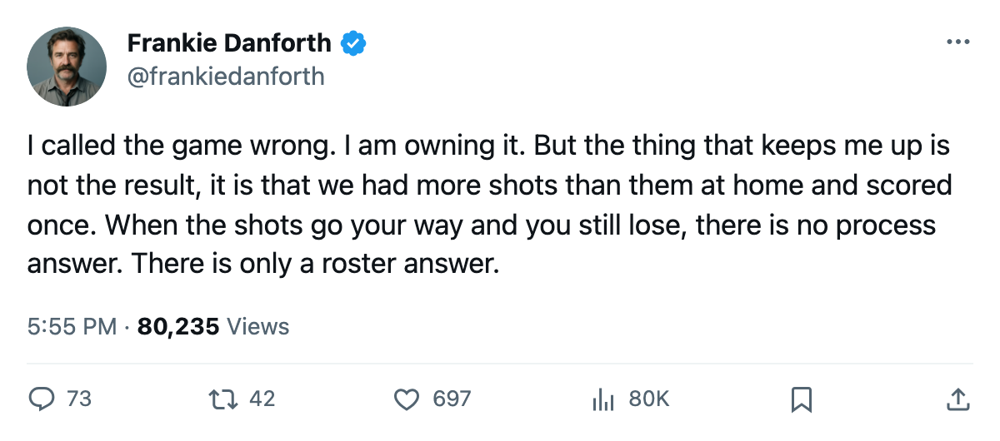

TOR
TORDANFORTH: I called it wrong on Tuesday. The shot number going the right way and still losing tells me everything about the next 17 days
The prediction was Toronto over Carolina. The record says otherwise. Here is what Tuesday actually says about a roster that has no answer when the puck does not go in.
 Frankie DanforthColumnist · Queen City Telegram
Frankie DanforthColumnist · Queen City Telegram
Code Yellow

I predicted Toronto beats Carolina on 2005-03-01. The record says  Carolina Hurricanes won 2-1. I was wrong, and I am putting that in print because a columnist who only writes the pieces he got right is not worth reading.
Carolina Hurricanes won 2-1. I was wrong, and I am putting that in print because a columnist who only writes the pieces he got right is not worth reading.
The loss stings for a Toronto reason. The Maple Leafs finished with 19 shots to Carolina's 18. They had the extra attempt, the extra rush, the extra zone entry, and they put one of 19 past the goaltender while Carolina put two past  Ed Belfour93. You can win a game on fewer shots. You can even lose one on fewer shots and shrug it off as a bad night. You cannot lead on shots at home, by a margin of one, and score once, and then tell yourself the process was fine.
Ed Belfour93. You can win a game on fewer shots. You can even lose one on fewer shots and shrug it off as a bad night. You cannot lead on shots at home, by a margin of one, and score once, and then tell yourself the process was fine.
The  Florida Panthers game on 2005-03-03 is the reset. Florida is 23-29-9, 61 points, and
Florida Panthers game on 2005-03-03 is the reset. Florida is 23-29-9, 61 points, and  Joe Nieuwendyk81 is out with a groin until 2005-03-19. The season series is 3-0-0, and this is the game a club with 102 points wins on the road. The one problem is that this particular team, on this particular stretch, cannot be counted on to win the easy one.
Joe Nieuwendyk81 is out with a groin until 2005-03-19. The season series is 3-0-0, and this is the game a club with 102 points wins on the road. The one problem is that this particular team, on this particular stretch, cannot be counted on to win the easy one.
Because the next stretch is anything but easy. The schedule through 2005-03-10 has  Ottawa Senators on the road,
Ottawa Senators on the road,  Buffalo Sabres on the road,
Buffalo Sabres on the road,  Vancouver Canucks at home, and
Vancouver Canucks at home, and  Edmonton Oilers on the road. Vancouver Canucks is 33-18-5 with the league's top offense in the Northwest at 240 goals. Edmonton Oilers has Ryan Smyth and 82 points. Ottawa Senators is on the road itself and has lost 3 straight. Three road dates in eight days, and the Maple Leafs' road record is 22-9, which is excellent, but it has been built against a schedule that has not yet asked them to win at Vancouver Canucks or Edmonton Oilers in the same week.
Edmonton Oilers on the road. Vancouver Canucks is 33-18-5 with the league's top offense in the Northwest at 240 goals. Edmonton Oilers has Ryan Smyth and 82 points. Ottawa Senators is on the road itself and has lost 3 straight. Three road dates in eight days, and the Maple Leafs' road record is 22-9, which is excellent, but it has been built against a schedule that has not yet asked them to win at Vancouver Canucks or Edmonton Oilers in the same week.
The deadline is what the calendar has as 2005-03-19. That is 17 days.  Marian Gaborik97 sits at +6 on the Bureau's Development Index,
Marian Gaborik97 sits at +6 on the Bureau's Development Index,  Brad Richards86 at +4. Those are real numbers, and they are the top of the depth chart at centre when the second centre should be carrying more.
Brad Richards86 at +4. Those are real numbers, and they are the top of the depth chart at centre when the second centre should be carrying more.  Mats Sundin90 has played 65 games and 74 points and he is 34 years old. Petr Chlup85 is 19 and has 38 points in 54 games. A hot stretch does not close that gap.
Mats Sundin90 has played 65 games and 74 points and he is 34 years old. Petr Chlup85 is 19 and has 38 points in 54 games. A hot stretch does not close that gap.
The panic meter runs Yellow as we open March. Not because of one loss. Because of what one loss revealed at 19 to 18 on the shot board: the margin between winning and losing on a night where the shots go your way is one good centre behind Sundin. And nobody is wearing that sweater.
I will make my prediction for Thursday: Toronto beats Florida. I will also make my prediction for what happens when the road dates arrive: the same 19 shots become 15 and the result stays the same. The deadline is where that gets fixed. Unless it does not.
